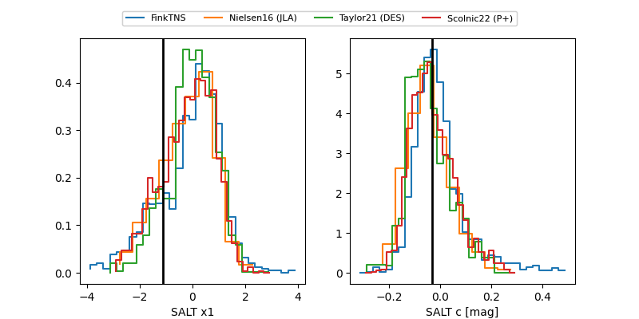

FINK: ZTF25aboqjxl
Lasair: ZTF25aboqjxl
ALeRCE: ZTF25aboqjxl
TNS: 2025xar
YSE: 2025xar
ZTF25aboqjxl (ztf,fink)
2025xar (tns,yse)
equatorial (ra, dec) = (28.1775,+46.07690)
galactic (l, b) = (133.8941,-15.48660)

last ztfg=19.65, ztfr=19.43
5 ztfg, 4 ztfr detections